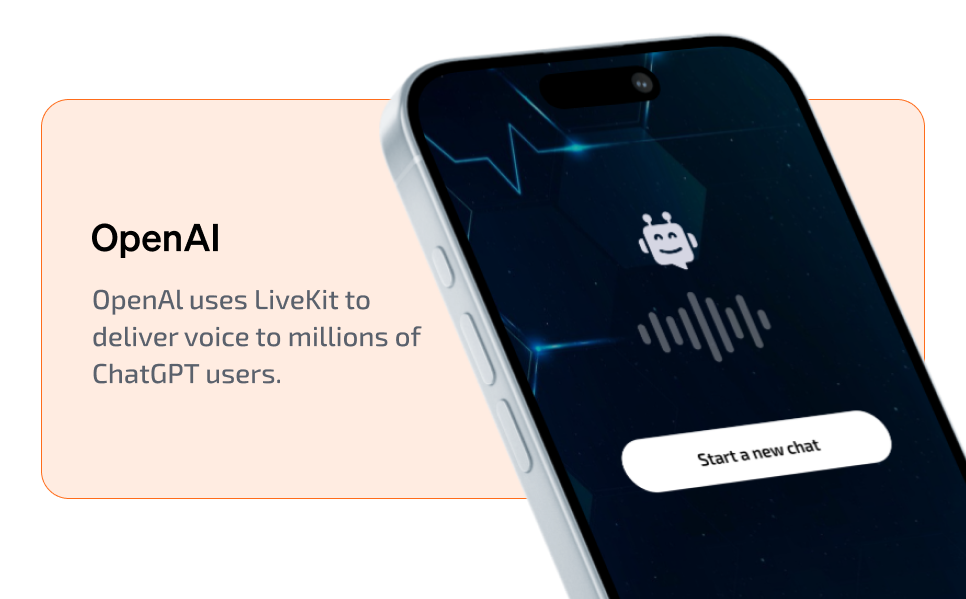
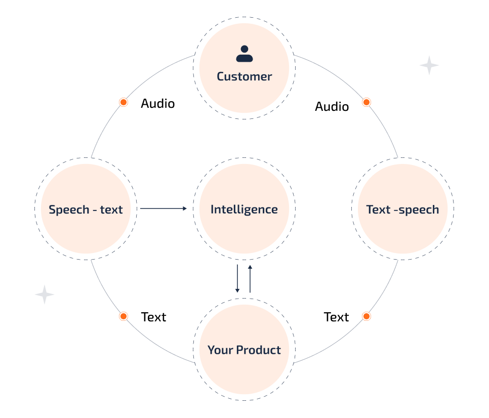

Are You A Business Trying To Transform The Way You Interact With Your Customers With Deepgram’s Ai Voice Technologies? If So Then Our Deepgram Ai Development Company Is The Technology Partner You Need To Turn Your Vision For Your Business Into A Reality. Deepgram Is A Powerful And Flexible Platform That Provides Businesses With Advanced Tools They Can Use To Turn Their Applications Into Highly Interactive And Accessible Products Through AI agent development. Access Advanced Ai Features That Are Capable Of Tasks Like Transcription, Text To Speech, Intelligent Audio Analysis And Much More With The Help Of Our Deepgram And Ai Experts. Create Products That Not Only Captivate Your Audience And Help Them Solve Their Problems But Also Engage Them And Turn Their Interactions Into An Experience.
Deepgram Ai Development
Deepgram Ai Development Is A Very Powerful Way For You To Take Your Business To New Heights By Leveraging Ai Enabled Audio Features Into Your Digital Products while keeping your AI development cost down. In The Current Technological Landscape It Is Important For Businesses To Understand The Competitive Advantages Of Integrating Ai Into Their Workflows And Create Solutions That Improve Their Customer Experience, Provide Customers With New Tools For Solving Their Problems And For Accessing Services. Deepgram Helps You Do Exactly That Through Their Transformative Features Like Ai Powered Automatic Speech Recognition Or Asr Which Allows You To Seamlessly Enhance Your Business Workflows With Intelligent Speech Recognition.
Text-To-Speech
Speech-To-Text
Audio Intelligence
Through Deepgram Ai Development We Can Build You A Diverse Set Of Solutions That Make Use Of Deepgram’s Tools And Features. Their Solutions Are Known For Their High Accuracy And You Get Features Like Transcription, Real Time Processing And Multilingual Support Which Are Powerful Tools You Can Use To Keep Your Customers Engaged And Make Your Products And Services More Accessible. Deepgram Also Provides You With Flexible Solutions Like Apis So That You Can Tailor Your Solutions To The Needs Of Your Business And Industry. The Industries That Can Benefit From Deepgram Include Healthcare, Education, Customer Support And Many More. Our Deepgram Ai Development Experts Work Closely With You To Understand The Nature Of Your Business And Your Customers To Help You Build Advanced Solutions That Can Enhance Your Customer Experience.
Deepgram Custom Ai Solutions
Deepgram Provides A Host Of Different Tools And Features For You To Build Custom Ai Solutions For Your Business. One Of The Offerings Of Deepgram Include A Flexible Set Of Apis And Machine Learning Models That You Can Use To Integrate Advanced Audio Capabilities Into Your Application. You Also Get Other Benefits Like Access To Customizable Transcription Models With Deepgram Ai Development Which Also Can Be Easily Adapted To Suit Terminologies Specific To Different Industries. This Is A Great Feature To Have Because You Can Integrate Unique Languages Into Your Application And Make The Transcription Process More Accurate.
For Instance If You Are Building A Solution For Countries Where Popular Languages Like English Or Spanish Are Not Frequently Used You Can Use Deepgram To Integrate The Language You Want And Provide Your Customers With Great Experience. Deepgram Is Capable Of Doing More Than Integrating Languages; You Can Also Customize Your Solutions Through Deepgram Ai Development According To The Dialects Or Accents And Improve Your Transcription Accuracy Further. Some Great applications for Deepgram AI development Could Be In Customer Support Through Call Centers, Healthcare, Finance And Of Course Education Where You Can Enhance Your Customer Satisfaction And Operational Efficiency.
Deepgram Ai For Developers
The Reason We Stand By Deepgram as one of the leading AI development companies Is Because Their Solutions Are Very Much Developer Friendly Which Is Crucial If You Want Your Solutions To Benefit Your Business For The Long Term. For Example Deepgram Provides You With Developer Friendly Sdks That You Can Use To Integrate Advanced Audio Capabilities Into Your Applications Seamlessly Through Deepgram Ai Development. Another Consideration Is The Speed Of Development And How You Create Complex Solutions With Ai When The Technology Itself Takes A Lot Of Time To Develop. Deepgram Has Solved This Aspect Of The Development Process Too Because You Get Access To Pre Built Language Models Where You Can Simplify The Implementation Of Audio Technologies And Voice Recognition Seamlessly.
Deepgram Is Also A Great Choice If Your Project Is Quite Large Scale And Provides You With The Necessary Tools To Deploy Asr Or Automatic Speech Recognition Technology In Real Time Or Create Batch Processing Systems. Deepgram Ai Development Allows You To Optimize Your Workflows So That Your Applications Can Scale As Your Business Scales. Not Only That But By Using Deepgram’s Tools You Also Get Full Scale Customization Options Where You Can Fine Tune Your Solution To Achieve Accuracy And Maintain Relevance In Terms Of The Outputs They Produce.
Applications For Deepgram Ai Development
The Great Thing About Deepgram’s Solutions Is That You Can Create Solutions For A Vast Range Of Different Use Cases. These Solutions Don’t Require You To Build The Underlying Ai Systems From Scratch With Access To Flexible Apis And Sdks For Maximum Efficiency And Reduce The Time It Takes To Develop Your Application. Through Deepgram Ai Development You Can Build Advanced Customer Support Systems Where You Can Automate Transcriptions During Customer Calls And Eliminate The Tedious Work Of Manual Transcription. Deepgram’s Solutions Also Provide Machine Learning Capabilities Which Means That Your Ai Agents Can Learn From Customer Interaction And Improve The Quality Of Their Performance Over Time Which Also Enhances Your Customer Experience And Satisfaction.
Healthcare Is Another Area Where Deepgram’s Solutions Are Very Relevant And You Can Create Applications That Are Capable Of Transcribing Medical Consultations And Improve Your Documentation Process. This Is A Crucial Part Of Keeping Patients Safe And Expediting The Process Of Healthcare By Automating Repetitive Tasks Such As Transcribing Consultations. Deepgram Ai Development Also Has Great Potential For The Education Sector And You Can Create Real Time Transcriptions For Virtual Classrooms And Seminars Without Having To Use A Human To Do That. The Media Industry And Content Creation Has Also Been A Great Use Case For The Technology Where You Can Transcribe Podcasts, Videos And Other Media Content Seamlessly.
Conversational Ai Services
We Help You Build Highly Advanced Conversational Ai Agents For Your Business Use Cases. Through Our Services You Can Harness Deepgram’s Robust Ai Capabilities To Create Conversational Interfaces With Deepgram Ai Development And Enhance The Accessibility Of Your Applications And Enhance Your Customer Experience. We Can Help You Build Cutting Edge Applications That Possess Advanced Speech To Text And Text To Speech Capabilities Which Can Help You Communicate Seamlessly With Your Audiences And Empower Your Business With The Power Of Ai Technology. Additionally, Intent Detection And Sentiment Analysis Is Another Feature That You Get With Deepgram.

We Can Help You Build Multilingual Chatbots And Ai Agent That Can Understand Inputs Provided By Your Customers Using Natural Language And Deliver Appropriate Responses Through Human-Like Conversations. Our Ai Development Services Can Also Help You Enhance Your Automation Strategies By Making Use Of Real Time Conversation Ai Tools That Are Powered By Deepgram’s Powerful Apis And Sdks. This Allows You To Improve Your Customer Experience, Scale Your Businesses Without Friction And Enhance Your Communication With Your Customers.
Text-To-Speech Api Service
Deepgram’s Flexible Apis Are An Efficient Way For You To Integrate Advanced Text To Speech Capabilities Into Your Applications. This Allows You To Create Scalable Applications That Can Convert Text Into Speech That Sounds Natural To Your Users And Create Conversational Interfaces Through Deepgram Ai Development For Your Customers. This Not Only Helps You Improve Your Customers Experience But Also Allows You To Help Customers Access Your Services Better Because They Have A Highly Interactive Interface Where They Can Hear The Content Out Loud. A Great Use Case For This Technology Could Be E-Commerce Where Often You Have A Diverse And Global Customer Base Which May Include Differently Abled Customers.
The Great Thing About Using Deepgram’s Solutions Is That It Allows You To Cover A Large Spectrum Of Customers Who May Speak Different Languages. You Can Build Solutions Using Deepgram Ai Development That Can Handle Multiple Voices, Tones And Languages Where You Can Cater To A Diverse Audience And Tailor Your Products To Suit Their Individual Needs. And You Can Do This Without Building Everything From Scratch. Some Use Cases Of Deepgram Would Be In Things Like Virtual Assistants, Ivr Systems And Accessibility Solutions For Visually Impaired Users.
Speech To Text Service
The Speech To Text Features That Deepgram Provides Further Helps You Improve The Accessibility Of Your Applications And Offer Users The Convenience Of Using Voice Inputs For A Variety Of Things. We Can Help You Build Solutions Through Deepgram Ai Development That Can Produce Industry Leading Transcription Accuracy Using Deepgram’s Automatic Speech Recognition Technology. The Benefit Here Is That You Can Build Advanced Applications That Can Handle Multiple Audio Formats Which Includes Things Like Live Streams And Pre Recorded Files. The Major Use Cases For This Technology Can Be Television, Films, Online Content Creation And Live Streaming Platforms.
The Deepgram Platform Also Provides You With A Feature Called Keyword Boosting Where You Can Improve The Recognition Of Certain Critical Terms Within The Audio. This Feature Can Go A Long Way To Enhance Your User Experience And Also To Keep Your Applications Friendly For All Users Through Deepgram Ai Development. This Can Be Anything Like Blocking Toxic Language, Making Sure That The Content On Your Platform Is Politically Correct And Protecting Minors From Explicit Language. Deepgram Also Provides You With Enhanced Flexibility By Allowing For Real Time And Batch Processing Of Speech. This Makes The Process Much Simpler And Organized So That You Have A Highly Efficient Audio Workflow.
Language Understanding Ai
A Key Part Of Enhancing Your Customer Experience And Making Your Application User Friendly Is To Give It The Ability To Read And Understand Natural Language. At The Heart Of Deepgram Ai Development Is Making Your Applications More Accessible To Users And We Can Do This Through A Technology Called Natural Language Processing. Through Natural Language Processing Or Nlp You Can Enable Features Inside Your Applications That Can Derive Meaningful Insights From The Speech That Is Transcribed. In Essence You Can Take Audio Recordings Which Could Be Very Large, Transcribe Them Into Text Form And The Ai System Can Provide You With Insights That Are Crucial To Improving Your Customer Experience. A Great Example For This Can Be In Customer Service Where You Can Transcribe Phone Call Conversations Between Your Customer Service Agents And Customers And Derive Insights From Through Deepgram Ai Development And Improve Your Customer Service Efforts Accordingly.
Furthermore You Get Features Through Deepgram Like Sentiment Analysis, Keyword Extraction And Intent Recognition To Understand Your Customers’ Needs Better. This Is Important Because Most Human Conversations Are Nuanced And Simply Looking At The Direct Means Of Words Or Sentences May Not Give You A Clear Picture Of What Your Customer Is Feeling. Sentiment Analysis Simplifies This Process Because The Ai System Can Detect The Emotional State Of Customers During Particular Conversations And Provide You With A More Accurate Representation Of What Their Needs Could Be. You Can Also Detect Keywords And Intent Of Customers For Using These Keywords Through Deepgram Ai Development And Tailor Your Services Accordingly So That Your Customers Can Achieve Their Goals Faster.
Deepgram Ai Api Development
Building Solutions Using Deepgram’s Apis Gives You The Power To Integrate Advanced Audio Features Into Your Applications Without Having To Worry About Building A Robust Ai Model To Achieve Your Goals. In Reality, Building Ai And Machine Learning Models Is A Complex Task And As Businesses You Wouldn’t Want To Approach App Development In The Same Way Because It Can Be Highly Time Consuming And Cost Prohibitive. Instead What You Can Do With Deepgram Ai Development Is That You Can Build Applications Using The Technologies Of Your Choice And Integrate the features of Deepgram AI API Into Your Application And Leverage The Ai Audio Technology Without Having To Build Dedicated Ai Models To Do So.

Deepgram’s Apis Are A Great Solution If You Want Features Inside Your Applications Like Automatic Speech Recognition. Along With This You Can Also Create Scalable Solutions That Are Capable Of Batch Processing Audio In Real Time. Deepgram’s Flexible Apis Also Provide You With Robust Features Like Keyword Boosting, Noise Cancellation And Multilingual Support To Help You Meet The Diverse Needs Of Your Business With Deepgram Ai Development. This Is A Great Solution For Your Business If You Want To Build Applications That Bring Actionable Insights Into Industries Like Finance, Education And Healthcare Using Deepgram’s Seamless Api Integrations.
Integration With Deepgram Ai Api
When It Comes To Integrating Advanced Ai Audio Features Into Your Applications Deepgram Prevails As A Very Strong Platform. The Platform Simplifies The Process Of Integrating These Apis And Allows You To Implement Advanced Audio Features Like Automatic Speech Recognition Into Your Applications Whether It Be On The Web Platform Or Mobile. Another Major Benefit Of Deepgram Ai Development Is The Support For Building Synchronous Applications With Technologies Like Webhooks And Real Time Streaming. This Not Only Provides You With The Ability To Create Robust And Scalable Applications But Also Allows You To Tailor Your Solutions For Your Specific Business Needs And Target Audience Whether You Are A Startup Or A Large Enterprise.
Features Of Deepgram Ai Api
Building Solutions Using Deepgram Can Be Very Rewarding For Businesses Because The Platform Provides You With A Host Of Powerful Features To Transform Your Applications. High Accuracy Is One Of The Features You Get With Deepgram Ai Development Where You Can Leverage Advanced Deep Learning Models That Are Designed To Recognize Industry Specific Jargon And Integrate Them Into Your Applications. The Other Benefit That You Get Is The Power Of Speed Where You Can Transcribe Audio In A Real Time Fashion And With Low Levels Of Latency Especially When You’re Building Time Critical Applications. Deepgram Is Also A Very Flexible Platform To Use With Great Support For Multiple File Formats, Languages And Accents. But That’s Not All Deepgram Is Especially Useful For Security And Provides You With Enterprise Grade Solutions To Safeguard Data Privacy And Ensure Regulatory Compliance. Deepgram Ai Development Is Also A Great Choice If You Want Customizability Where You Can Access Ai Models That You Can Fine Tune To Suit The Specific Needs Of Your Business Or Industry.
Use Of Deepgram Ai Api
The Use Of Deepgram’s Apis Can Benefit Your Business In Multifolds Because Of The Advanced And Robust Features They Offer. One Way Deepgram’s Solutions Can Help Your Business Is Through Real Time Transcription And Analysis Which Allows You To Exponentially Enhance Your Customer Experience. Automation Is Also A Benefit That You Get With Deepgram Ai Development Where You Can Seamlessly Automate Your Documentation Process Especially For Specialized Industries Like Legal, Medical And Education. A Great Use Case For Deepgram Is In The Media Industry Where You Can Create Solutions That Provide Better Accessibility For Users Through Things Like Live Subtitles And Captions.
Deepgram Api Development
Deepgram Is A Very Powerful And Flexible Platform For Building Your Solutions With High Quality Apis That You Can Use To Address The Specific Challenges Of Your Business. Deepgram voice intelligent APIs Allow You To Design And Deploy Solutions With Advanced Ai Capabilities And Also Customize Your Solutions To Suit Your Customer Goals With Deepgram Ai Development. We Are Also Experienced In Building Enterprise Grade Solutions For Businesses Looking To Leverage Advanced Features Like Audio Transcription, Real Time Analytics And Natural Language Understanding To Provide Users With A Highly Tailored Experience. Deepgram Is Also A Great Option If You’re A Business Trying To Streamline Your Operations And Enhance Your Customer Interactions With Powerful Audio Intelligence Tools.
Deepgram Api Development Solutions
We Work Closely With Our Clients To Provide Them With Customized And High Quality Services. Our Services Cover The Process Of Deepgram Ai Development From End To End Which Starts From The Initial Ideation And Strategy To Design And Full Scale Deployment Of Your Solutions. We Additionally Provide You With A Limited Free And Extended Paid Support For Maintaining Your Applications For The Long Term.
Hire Deepgram AI Developer
Our industry leading team of experts who are experienced in the use of Deepgram AI API will be at your side whether you want to build a complete solution from end to end or if you want to expand your operations and scale your development process. As a leading and trusted Deepgram Ai Development company we can provide you with flexible options to integrate our resources into your team without needing to extensively train them. Our staff augmentation program is the perfect solution for businesses that want to enhance their development process without having to search through talent pools endlessly. We provide multiple payment plans for businesses depending on their requirements and include per project pricing, hourly rates and a monthly retainer model for large scale and long term projects.
Deepgram API Development For Businesses
Our Deepgram development services are geared towards businesses and enterprises that want to integrate Deepgram’s transformative audio capabilities into their workflows. We approach Deepgram Ai Development holistically and can help you regardless of what stage your project is and what size your business is. Our offerings include building scalable solutions for audio analytics, compliance monitoring and customer sentiment tracking. We also provide you with high quality services that are scalable, cost effective and provide you with everything you need to achieve business growth.
Enhance Your Customer Experience with Our Deepgram AI Development Services for Businesses
Our goal as a business is to help visionary founders from around the world provide better services to their customers through innovative software solutions with Deepgram API development for businesses. Deepgram AI Development is a powerful way for you to enable advanced audio capability inside your applications where you can build and ship scalable solutions quickly. Access industry leading experts from our stellar product development teams and create solutions that your customers not only love but also provide them with a simplified user journey to achieve their goals faster.